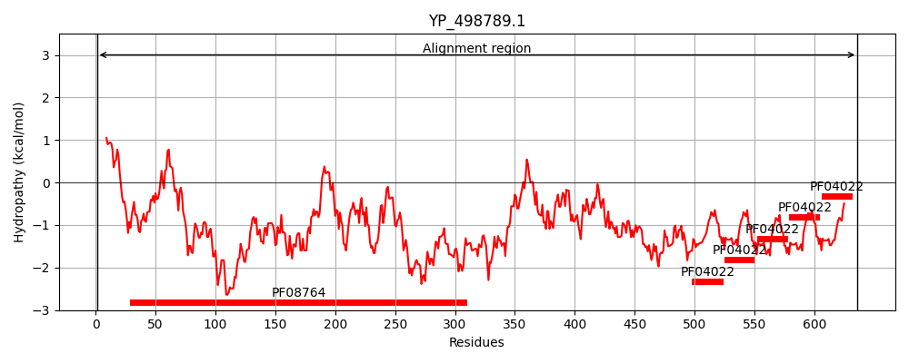
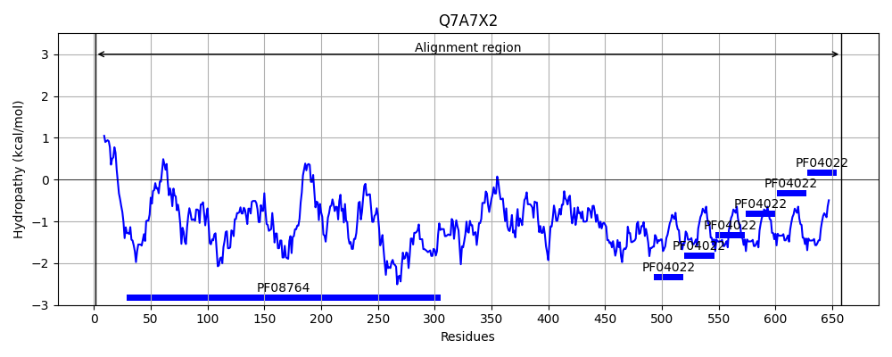
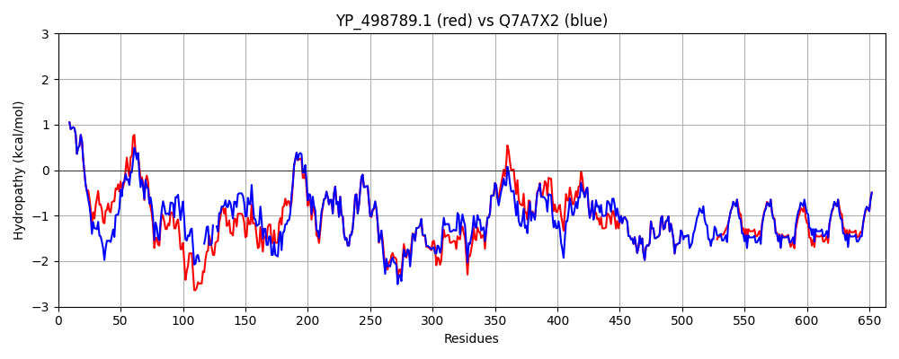

Hit Accession: Q7A7X2
Hit TCID: 3.A.1.122.4
Hit Description: gnl|BL_ORD_ID|15378 gnl|TC-DB|Q7A7X2|3.A.1.122.4 Staphylocoagulase OS=Staphylococcus aureus (strain N315) GN=coa PE=4 SV=1
Mach Len: 663
e:0.000000
Query TMS Count : 0
Hit TMS Count: 0
TMS-Overlap Score: 0.000000
Predicted Substrates:CHEBI:5651;ferroheme b
BLAST Alignment:
Score: 2647 , Bit scores: 1024 bits, E-value: 0.0e+00, Alignment length: 663, Percentage identity: 79
Query: 1 MKKQIISLGALAVASSLFTWDNKADAIVTKDYSGKSQVNAGSKNGTLIDSRYLNSALYYLEDYIIYAIGLTNKYEYGDNIYKEAKDRLLEKVLREDQYLLERKKSQYEDYKQWYANYKKENPRTDLKMANFHKYNLEELSMKEYNELQDALKRALDDFHREVKDIKDKNSDLKTFNAAEEDKATKEVYDLVSEIDTLVVSYYGDKDYGEHAKELRAKLDLILGDTDNPHKITNERIKKEMIDDLNSIIDDFFMETKQNRPKSITKYNPTTHNYKTNSDNKPNFDKLVEETKKAVKEADDSWKKKTVKKYGETETKSPVVKEEKKVEEPQAPKVDNQQEVKTTAGKAEETTQPVAQPLVKIPQGTITGEIVKGPEYPTMENKTVQGEIVQGPDFLTMEQSGPSLSNNYTNPPLTNPILEGLEGSSSKLEIKPQGTESTLKGTQGESSDIEVKPQATETTEASQYGPRPQFNKTPKYVKYRDAGTGIREYNDGTFGYEARPRF---------------------------NKPSETNAYNVTTHANGQVSYGARPTYKKPSETNAYNVTTHANGQVSYGARPTQNKPSKTNAYNVTTHGNGQVSYGARPTQNKPSKTNAYNVTTHANGQVSYGARPTYKKPSKTNAYNVTTHADGTATYGPRVTK 636
MKKQIISLGALAVASSLFTWDNKADAIVTKDYS +S+VN SK G + Y + LE AI L Y+YGD IYKEAKDRL+ +VL EDQYLL++K +YE YK+WY K N T+ M FHKYNL L+M EYN++ ++LK A+ F++EVK+I+ KN DLK F+ EDKATKEVYDLVSEIDTLVV+YY DKDYGEHAKELRAKLDLILGDTDNPHKITNERIKKEMIDDLNSIIDDFFMETKQNRP SITKY+PT HN+K S+NKPNFDKLVEETKKAVKEAD+SWK KTVKKY ET TKSPVVKEEKKVEEPQ PKV NQQEVKTTAGKAEETTQPVAQPLVKIPQ TI GE VKGPEYPTMENKT+QGEIVQGPDFLTMEQ+ PSLS+NYT P NPILEGLEGSSSKLEIKPQGTESTLKG QGESSDIEVKPQATETTEASQYGPRPQFNKTPKYVKYRDAGTGIREYNDGTFGYEARPRF NKPSETNAYNVTTHANGQVSYGARPT KKPS+TNAYNVTTHANGQVSYGARPTQ KPSKTNAYNVTTH NGQVSYGARPT KPS+TNAYNVTTHANGQVSYGARPT KKPS+TNAYNVTTHADGTATYGPRVTK
Sbjct: 1 MKKQIISLGALAVASSLFTWDNKADAIVTKDYSKESRVNEKSKKGATVSDYYYWKIIDSLEAQFTGAIDLLEDYKYGDPIYKEAKDRLMTRVLGEDQYLLKKKIDEYELYKKWY---KSSNKNTN--MLTFHKYNLYNLTMNEYNDIFNSLKDAVYQFNKEVKEIEHKNVDLKQFDKDGEDKATKEVYDLVSEIDTLVVTYYADKDYGEHAKELRAKLDLILGDTDNPHKITNERIKKEMIDDLNSIIDDFFMETKQNRPNSITKYDPTKHNFKEKSENKPNFDKLVEETKKAVKEADESWKNKTVKKYEETVTKSPVVKEEKKVEEPQLPKVGNQQEVKTTAGKAEETTQPVAQPLVKIPQETIYGETVKGPEYPTMENKTLQGEIVQGPDFLTMEQNRPSLSDNYTQPTTPNPILEGLEGSSSKLEIKPQGTESTLKGIQGESSDIEVKPQATETTEASQYGPRPQFNKTPKYVKYRDAGTGIREYNDGTFGYEARPRFNKPSETNAYNVTTNQDGTVSYGARPTQNKPSETNAYNVTTHANGQVSYGARPTQKKPSKTNAYNVTTHANGQVSYGARPTQKKPSKTNAYNVTTHANGQVSYGARPTYKKPSETNAYNVTTHANGQVSYGARPTQKKPSETNAYNVTTHADGTATYGPRVTK 658 | Protein Hydropathy Plots: |
|---|
|  |  |
Pairwise Alignment-Hydropathy Plot:
|
|---|
|  |